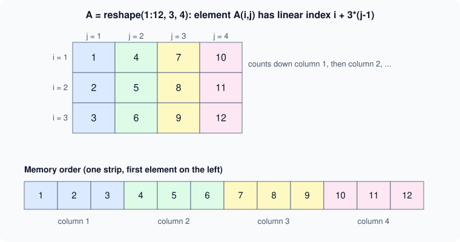

Matrices and Arrays
|
This content was generated with the assistance of AI and should be verified against the official documentation before being relied on in production. |
Written against MATLAB R2026b. The sessions below were run in GNU Octave 11.3.0 (MATLAB code that Octave also accepts) and show Octave’s output; the numbers are the same in MATLAB but the layout differs (Octave prints Diagonal Matrix for the result of eye and diag, for example, and MATLAB does not). createArray (R2024a) and other features Octave lacks are checked against the R2026b documentation and labelled "not run here".
MATLAB stands for matrix laboratory, and the array is its only fundamental data structure: every value, including a scalar (a 1-by-1 array), a character vector or a table’s column, behaves as an array with at least two dimensions. Thinking in whole arrays is what makes MATLAB code short; the rules of this page (how to make arrays, how to join them, how to read their shape and how they sit in memory) are used by every other page. Reading and changing parts of an array is on Indexing; combining arrays of different sizes element by element is on Implicit Expansion and Compatible Sizes.
Terminology
-
A scalar is a 1-by-1 array, a row vector is 1-by-n, a column vector is n-by-1, a matrix is any two-dimensional array m-by-n, and an N-D array has more than two dimensions. The size is the vector of dimension lengths:
size(A)of a 3-by-4 matrix is[3 4]. -
Dimension 1 runs down the rows, dimension 2 runs across the columns, dimension 3 is the "page". Every array has an unlimited number of trailing dimensions of size 1.
-
A plate temperature field in the heatflow scenario is a matrix
Tof sizeny-by-nx: rows follow the y direction and columns follow the x direction, which is the order MATLAB uses for matrices, images andmeshgridoutput.
Creating arrays with brackets
Square brackets build an array. Elements in a row are separated by spaces or commas; a semicolon or a new line starts a new row. Every row must have the same number of elements.
A = [1 2 3; 4 5 6]
B = [1, 2, 3
4, 5, 6]Octave 11.3.0 output (both statements give the same matrix):
A =
1 2 3
4 5 6
B =
1 2 3
4 5 6An empty pair of brackets, [], is the 0-by-0 empty array. A single number needs no brackets. A space before a minus sign inside brackets starts a new element (see Syntax, Statements and Variables); use commas when in doubt.
The colon operator, linspace and logspace
first:last makes a row vector of the integers from first to last; first:step:last uses a step, which can be fractional or negative. The colon operator has lower precedence than the arithmetic operators, so 1:n+1 is 1:(n+1). The number of elements is floor((last-first)/step) + 1, and the last element is never beyond last. With a fractional step, rounding in the arithmetic is the reason to prefer linspace when you need an exact number of points.
-
linspace(a,b,n)returnsnevenly spaced points fromatobinclusive; the defaultnis 100. -
logspace(a,b,n)returnsnpoints logarithmically spaced between10^aand10^b.
r = 0:0.25:1
l = linspace(0,1,5)
g = logspace(0,2,3)Octave 11.3.0 output:
r =
0 0.2500 0.5000 0.7500 1.0000
l =
0 0.2500 0.5000 0.7500 1.0000
g =
1 10 100For the plate, the grid coordinates are rows made with the colon or linspace: x = (0:nx-1)*dx is a 1-by-nx row, and y = (0:ny-1)'*dy is an ny-by-1 column.
Creation functions
Preallocating an array with a creation function and then filling it is the normal way to build large arrays (see Vectorization and Preallocation).
| Function | Result |
|---|---|
|
Arrays of zeros or ones. |
|
The identity matrix ( |
|
Uniform, normal and integer random values (see Random Numbers and Reproducibility). |
|
A magic square: rows, columns and diagonals have the same sum. Useful for small test matrices. |
|
With a vector, a matrix with the vector on the diagonal; with a matrix, its diagonal as a column. |
|
A block matrix with |
|
Arrays filled with the named value; |
|
New in R2024a. Creates an array of a given size and class with a fill value, for any class that supports it (not run here). |
Z = zeros(2,3); O = ones(2,2)*7; I = eye(3)
D = diag([1 2 3])
M = magic(4)
R = repmat([1 2],2,2)Octave 11.3.0 output (without the lines for Z and O, which end with semicolons):
I =
Diagonal Matrix
1 0 0
0 1 0
0 0 1
D =
Diagonal Matrix
1 0 0
0 2 0
0 0 3
M =
16 2 3 13
5 11 10 8
9 7 6 12
4 14 15 1
R =
1 2 1 2
1 2 1 2MATLAB prints I and D as ordinary full matrices; the Diagonal Matrix banner is Octave’s special storage type. A dimension argument can also be a size vector, and zeros(size(A)) makes an array shaped like A. For the plate:
nx = 5; ny = 4;
T = zeros(ny, nx);
T(1,:) = 100;Concatenation
Brackets concatenate: [A, B] joins horizontally (the numbers of rows must match), [A; B] joins vertically (the numbers of columns must match). The functions behind the brackets are horzcat, vertcat and cat(dim, A, B, ...), which also joins along the third and higher dimensions.
A = [1 2 3; 4 5 6];
h = [A, [7;8]]
v = [A; 9 9 9]
T = cat(3,[1 2;3 4],[5 6;7 8]); size(T)
try, [A; 1 2], catch err, disp(err.message), end
try, [A, [1;2;3]], catch err, disp(err.message), endOctave 11.3.0 output:
h =
1 2 3 7
4 5 6 8
v =
1 2 3
4 5 6
9 9 9
ans =
2 2 2
vertical dimensions mismatch (2x3 vs 1x2)
horizontal dimensions mismatch (2x3 vs 3x1)The two error messages are Octave’s. MATLAB reports both cases, with brackets or with vertcat, horzcat and cat, as Dimensions of arrays being concatenated are not consistent., with the identifier MATLAB:catenate:dimensionMismatch (not run here). Concatenation of different types follows rules: joining a character with a number gives characters; joining integer types gives the integer type of the first; joining a string with a character vector gives a string. See Numeric Types and Floating Point and Strings and Character Arrays.
Sizes and shapes
| Function | Meaning |
|---|---|
|
The vector of dimension lengths. |
|
The number of elements. Prefer it to |
|
The number of dimensions, always at least 2. |
|
The length of the largest dimension (0 for an empty array). On a matrix this is not the number of elements or rows, which is the classic |
|
Shape tests returning |
A = [1 2 3; 4 5 6]; r = 0:0.25:1;
size(A), numel(A), ndims(A), length(A)
isrow(r), iscolumn(r'), isscalar(5), isvector(r)Octave 11.3.0 output:
ans =
2 3
ans = 6
ans = 2
ans = 3
ans = 1
ans = 1
ans = 1
ans = 1length(A) is 3 here because the longest dimension is the 3 columns, not the number of elements (6) or rows (2). A loop for k = 1:length(x) is safe only when x is a vector; numel(x) is the safe spelling.
Reshaping and rearranging
-
reshape(A, m, n)(orreshape(A, [], n)with one dimension left to MATLAB) changes the shape without changing the order of the elements in memory, which is column order; the number of elements must stay the same. -
permute(A, order)reorders dimensions;ipermuteundoes it. For a 2-D matrix,permute(A,[2 1])is the transpose. -
squeeze(A)removes dimensions of length 1 (a 1-by-1-by-3 array becomes a 3-by-1 column). -
A(:)turns any array into a column in memory order (see Indexing). -
A'is the complex conjugate transpose andA.'the plain transpose. For real data they agree; for complex data'changes the sign of the imaginary part, which is one of the classic bugs: use.'unless you want the Hermitian transpose. -
circshift,flip,fliplr,flipud,rot90andsortrearrange elements (see Sets and Sorting).
C = reshape(1:6, 2, 3)
C(:)'
P = permute(reshape(1:6,1,2,3),[3 2 1])
squeeze(ones(1,1,3))'
z = [1+2i 3-4i];
z', z.'Octave 11.3.0 output:
C =
1 3 5
2 4 6
ans =
1 2 3 4 5 6
P =
1 2
3 4
5 6
ans =
1 1 1
ans =
1 - 2i
3 + 4i
ans =
1 + 2i
3 - 4iNotice that reshape(1:6, 2, 3) fills the first column before the second, not the first row. The two transposes of z differ only in the sign of the imaginary part.
Multidimensional arrays
An array with more than two dimensions is created with zeros(m,n,p), cat(3, ...), by assigning to a third index, or with reshape. The extra dimensions are often called pages. Functions that reduce over a dimension take a dim argument, so sum(A,3) adds the pages. Display shows one 2-D slice at a time. A typical use is a stack of plate temperatures over time, T(:,:,k) being the field at time step k; a color image is height-by-width-by-3.
Empty arrays
An empty array has at least one dimension of length zero: [] is 0-by-0 and zeros(0,3) is 0-by-3. isempty(A) tests for it. Empty arrays are valid values, not errors: they come from filtering with no match (x(x>10) when nothing is greater than 10), from find with no hits, and from preallocating a growing result with []. Reductions are defined on them (sum(zeros(0,3)) is [0 0 0]), and concatenation with them is the identity for matching dimensions. Compare with isempty, never with == [], which yields an empty result. In an if, an empty condition is false (see Logical Type and Conditions).
E0 = zeros(0,3); size(E0), isempty(E0)
sum(E0)Octave 11.3.0 output:
ans =
0 3
ans = 1
ans =
0 0 0Column-major storage
MATLAB stores every array as one block of memory in column-major order: the elements of the first column come first, then those of the second column, and so on (Fortran uses the same order; C and Python/NumPy by default use the opposite, row-major order). Consequences used throughout MATLAB:
-
A single (linear) index counts down the columns, so
A(5)of a 3-by-4 matrix isA(2,2). -
A(:)andreshaperead and write in that order. -
Loops over the first index in the innermost position touch memory contiguously and are faster.
-
Data arrays crossing to C, Fortran or NumPy (see Calling Python from MATLAB) need the order to be handled explicitly.

The figure is an original schematic, not a MathWorks figure.
Pitfalls
-
lengthversusnumel:lengthis the largest dimension. -
Row versus column:
x = 1:5is a row; operations that mix it with a column (x - y') expand silently into a matrix (see Implicit Expansion and Compatible Sizes). -
'on complex data conjugates; use.'for a plain transpose. -
zeros(n)is n-by-n, not a vector of length n; writezeros(n,1)orzeros(1,n). -
Mismatched concatenation is an error, but a ragged cell array is not: use
{ }(see Cell Arrays). -
Growing an array in a loop reallocates it every time; preallocate with
zeros. -
reshapekeeps column order, so reshaping data stored by rows needs a transpose first.
Where older books differ
Introductions for MATLAB 5 to 7 describe the same array model. What has changed is around it: repmat and bsxfun were the way to combine a column and a row before implicit expansion arrived in R2016b (see Implicit Expansion and Compatible Sizes), rand('seed',0) and rand('state',0) were the way to seed a generator where rng is used now, and createArray (R2024a) is newer than the books. Counting loops written with length(x) and growing arrays inside loops are common in older code and are best replaced by numel and preallocation.